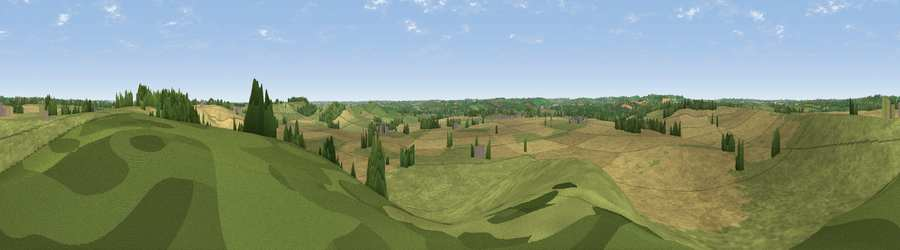

Viewpoint near Little Brington
#32057 in England · top 43% of its area beats it · near Little BringtonWhere it is
The exact computed spot (SP 65375 63025). Click the marker for map links.
The view, rendered

A 360° render of this exact spot computed from the terrain model, tree cover and land cover — summer colours, afternoon light, calibrated against photographs of famous viewpoints. Real trees, hedges and buildings will differ in detail.
The panorama
Grey silhouette: terrain skyline in each direction (720 bearings, Earth curvature and refraction included). Dashed green: skyline with trees (+15 m) and buildings (+8 m) as obstacles. Blue strip: how far the ground is visible on each bearing.
Where the view opens
Wedge length = distance to the farthest visible ground on that bearing (vegetation-aware). Rings at 10, 25 and 50 km.
What fills the view
54% cropland · 42% grassland · 4% woodland
Angular shares of the visible panorama (visual magnitude), not map area. Landscape diversity 0.37 (0–1 Shannon).
Key numbers
More beautiful places nearby
The staircase of upgrades: each row has a higher view potential than everything closer. Driving times are estimates from straight-line distance, calibrated against real road routing — check an actual route before setting out.
| Place | Direction | Drive | Score |
|---|---|---|---|
| Viewpoint near Upper Heyford | SE · 2 km | ~6 min | 40.5 |
| Glassthorpe Hill | SSE · 3 km | ~7 min | 44.2 |
| Viewpoint near Long Buckby | N · 5 km | ~11 min | 45.2 |
| Viewpoint near Norton | W · 6 km | ~14 min | 52.0 |
| Viewpoint near Staverton | W · 10 km | ~20 min | 54.0 |
| Big Hill - Staverton Clump | W · 11 km | ~20 min | 68.4 |
| Viewpoint near Northend | WSW · 28 km | ~44 min | 69.7 |
| Viewpoint near Northend | WSW · 28 km | ~44 min | 70.3 |
52.26151, -1.04356 · source: screening · position refined by local search. Computed location — check access rights before visiting.